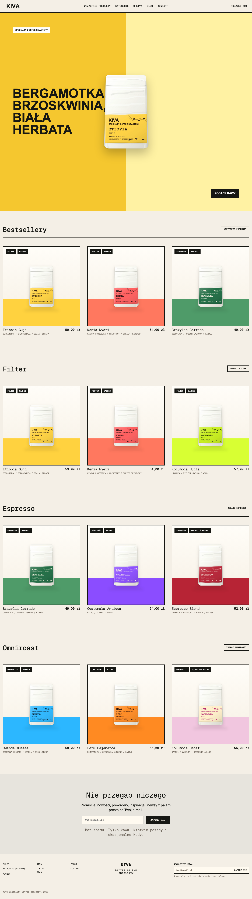
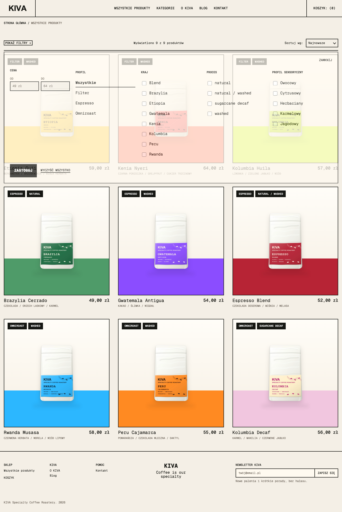
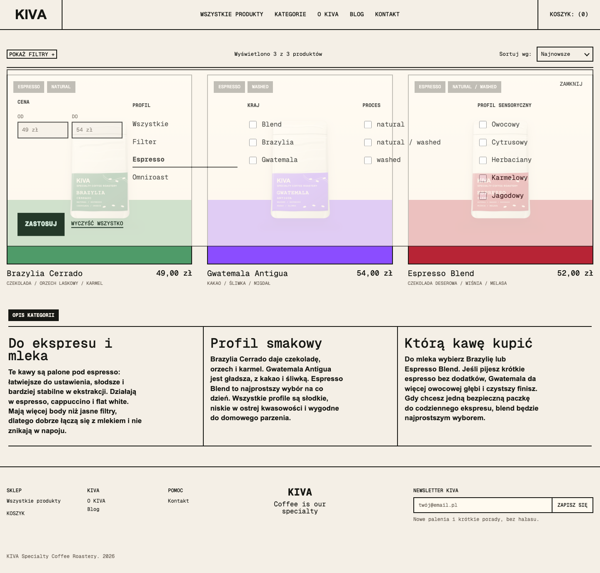
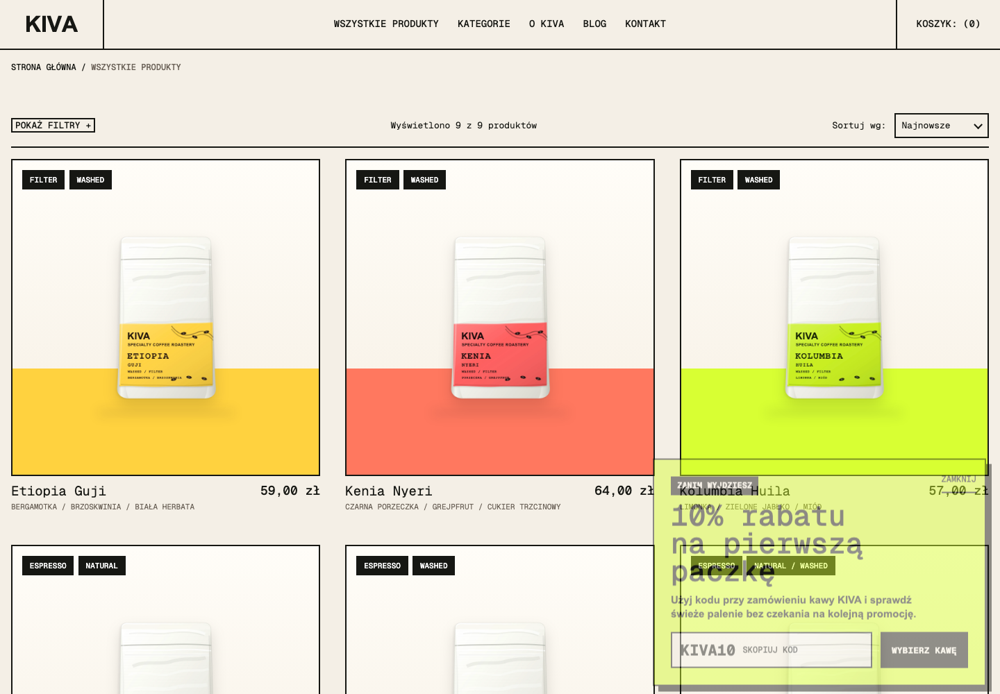

KIVA to strona dla fikcyjnej palarni kawy specialty. Jej zadaniem jest prezentacja marki, pokazanie oferty kaw ziarnistych oraz ułatwienie wyboru produktu według metody parzenia, profilu smakowego, kraju pochodzenia, procesu obróbki i ceny.
Strona ma charakter sklepowy: użytkownik może przejść do listy produktów, filtrować kawy, otwierać podstrony kategorii i produktów oraz korzystać z lekkiego koszyka frontendowego. Warstwa wizualna opiera się na mocnej typografii, kontrastowych liniach, dużych zdjęciach opakowań oraz prostych, czytelnych interakcjach.
Najważniejsze elementy strony: homepage lista produktów kategorie filtry koszyk blog kontakt SEO automatyzacja rabatu
Strona zawiera stronę główną, katalog produktów, osobne podstrony produktów, blog, kontakt, stronę 404 oraz podstrony kategorii. Kategorie są dostępne z menu nawigacji oraz z filtrów w katalogu produktów.
Podstrony kategorii mają teraz dodatkowy opis pod listą produktów. Każda kategoria zawiera trzy nagłówki H2 z krótkimi opisami: zastosowanie kawy, profil smakowy oraz sugestię wyboru. Dzięki temu podstrony kategorii mają więcej treści SEO, ale nadal wyglądają jak część sklepu, a nie długi artykuł.
Strona ma tytuły meta, opisy meta, kanoniczne adresy URL, poprawne nagłówki H1/H2, opisy alternatywne obrazów, mapę strony oraz plik robots.txt. Blog korzysta ze schema Article JSON-LD. Podczas budowania projektu uruchamiana jest walidacja SEO dla wygenerowanych plików HTML.
Na stronie działa automatyzacja typu exit-intent. Kiedy użytkownik przesuwa kursor w stronę opuszczenia strony, pojawia się baner z rabatem KIVA10 na pierwszą paczkę. Baner zawiera przycisk kopiowania kodu oraz link do wyboru kawy.
Link do strony, na której można przetestować automatyzację: https://kiva-roastery.michael-sakhnenko.workers.dev/produkty/. Kod automatyzacji znajduje się w repozytorium: src/components/ExitIntentOffer.astro.
Baner resetuje się po odświeżeniu strony, ale po zamknięciu nie pojawia się ponownie w tej samej odsłonie. Na urządzeniach mobilnych używany jest alternatywny warunek: przewinięcie w dół, a następnie szybki powrót w górę strony.



